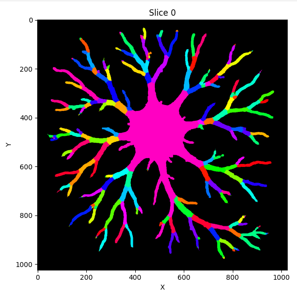

Labeling Branches and Branch Networks
Labeling Branches
To demonstrate branch labeling, I will use a cartoon depiction of a neuron.

First, I load my image into the nodes channel and segment the image into a binary mask with the ML-segmenter.
Next, I save the binary mask and reload it into the edges channel. The edges channel is the staging channel for all branch labeling.
Next, I run ‘Process -> Generate -> Label Branches’
I am prompted by a window and select ‘Run Branch Label’ to use the default settings. I am prompted by a second window and select ‘Run Node Generation’ to use its default settings (this is a sub-algorithm that the former uses).
With these default settings, my labeled branches look like this:
{kind=link}
Note branch labeling will put a grayscale value into your edges channel. I generated this colorful one for visualization using ‘Image -> Overlays -> Color Nodes (or Edges)’
We can see this image has succesfully identified the majority of the branches here. In many cases, a labeling schematic like this will be sufficient and we can proceed.
Examples of Tweaking Branch Labels (Optional)
However, in this instance, there are few areas that may be worth addressing for a more accurate labeling.
Mainly, that there are little branches at the end of some of the dendrites that do not belong there. (In this case, this is due to segmentation artifacts making the edges appear to have really small branches).
Luckily NetTracer3D’s branch labelling algorithm has a good variety of auto-correcting tools when labeling branches. Here are a few that are enabled by default that I generally recommend:
By default, ‘Auto-Correct 2’ is enabled in the branch labeler. This option collapses any internal labels and forces them to merge with neighbors bordering the background. Otherwise, the middle of the neuron here (the soma) would likely have obtained a mosaic-looking set of labels.
For 3D images, ‘Attempt to Auto-Correct Skeleton Looping’ is auto-enabled. This option attempts to convert any polyp-looking artifacts that show up in the internal skeletonization step back to single filaments (generally recommend).
However, this is not enabled for 2D, so my neuron did not use it. Mainly this is because in 2D, it cannot tell the difference between an artifactual and a real loop, but in this case we don’t have any real loops so we’ll use it.
Handling spine artifacts
Reloading my binary image of a neuron into edges, I once more run the branch labeler. I would like to avoid those small, wrongly labeled terminal branches from slipping through. To do this, I want to decide what length of spine to remove from the image skeleton (which is used to label branches). This choice can be informed by skeletonizing my image with ‘Process -> Image -> Skeletonize’, then measuring the length of these terminal branches by right-clicking in the Image Viewer Window and placing measurement points:
{kind=link}
Here we are at the end of a dendrite. We can see that the skeleton has incorrectly split - this is the source of those little branches. Use direct measurement for an accurate estimate of what spine lengths to remove
when prompted with the second menu, I enable a new optional setting:

Here, I set ‘Skeleton Branch Length to Remove’ to ‘8’
Now when I run my labeler, it ignores all terminal branches below that length. Note this algorithm will only remove branches starting from an endpoint, until reaching a parent branch. Therefore, more internal branches that do not have endpoints themselves are always safe from removal, allowing us to use larger numbers without risk of major changes to the image.
Handling split labels
Depending on the the structure of the branched image, rarely certain branches may inherit the label of a nearby branch, if they are far away from the internal filament (skeleton) of their own branch and the adjacent branch is much smaller.
This issue does not apply here, but to address it, I could enable the ‘Split Non-Touching Branches’ correction option, which is relevant mainly for ‘Branch Adjacency Networks’, but generally not recommended if running purely morphological analysis.
With Corrections
Our final branch labeled neuron looks like this:
{kind=link}
Branches smaller than 8 voxels long have joined their neighbors
Morphological Analysis
Beyond just networks, NetTracer3D offers a suite of options for morphological and/or spatial analysis that doesn’t even pertain to the network itself.
For example here, I use ‘Analyze -> Stats -> Calculate Radii’, then use the radii table to threshold my branches by radius, shown below.
Any calculation done on the nodes can be used to threshold the nodes from the table, generally speaking, which makes NetTracer3D very useful at tying analytics back into spatial analysis.
{kind=link}
*Note that thresholding with the tables always applies on the nodes, but labelling branches puts them in the edges channel by default sometimes. You can use ‘Image -> Overlays -> Shuffle’ to move images around to where you want them.
Branch Adjacency Network
The simplest way to create a branch adjacency network is to run ‘Process -> Calculate Network -> Calculate Branch Adjacency Network (of edges)’
This can be run on a binary image in the ‘edges’ channel.
It simply labels the branches with the same options as above, then calls the proximity network to find neighbors a distance of 1 voxel away.
Of course, it could also be accomplished by labeling the branches, moving them to the nodes channel, and manually running a proximity network.

Using networks, we have abstracted down the image of this neuron into a very simple data structure
Using Branch Labels as Nodes
One interesting use of branch labeling is its ability to ‘node-ify’ structures that are otherwise not seperable into discrete regions. Once we label an image’s branches, we can use those as nodes to generate a connectivity network. For example, in the below image, I label the bronchi on this 3D image of a mouse lung to see how they are innervated by a set of nearby nerves:
{kind=link}
This dataset was shared by Rebecca Salamon from UC San Diego. Please use ‘Image -> Show 3D’ to call a Napari window that will automatically load active NetTracer3D datasets for 3D visualization.

Same image but with the alogrithmically-derived branches displayed. Using branch labeling, we can split up biological objects into meaningful domains

And of course, the network itself
Branchpoint Networks
Another option for creating networks from branched objects is connecting the branchpoints rather than the branches themselves. To accomplish this, the easiest way is to run ‘Process -> Calculate Network -> Calculate Branchpoint Network’
This can be run on a binary image in the ‘edges’ channel.
It simply assign nodes to branchpoints using the ‘Process -> Generate -> Generate4 Nodes From Edge Vertices’ option, then assigns neighbors based on which edges interact with which node.
Although not exactly the same, this can be accomplished by running the aforementioned methods to generate the nodes, then manually linking them with a connectivity network. (But note that if done this way, some level of node-search is required, which would probably be slower).
In the below example, I segment, then create a branchpoint network from a 3D image of lymph nodes.

The raw image (background masked). This original image was downloaded from the HuBMAP portal from an image captured by the University of Florida TMC

Same image with its network overlay superimposed

Not related to the network, but here are its labeled branches
Labeling branchpoint networks is an additional way to explore networks of branched objects. Branchpoint networks, for example, show the discrete connections between branches better than branch adjacency networks. However they come with the downside of not being able to access some of the higher level branch-editing options, such as the auto-correction based on grouping.
Next Steps
Next, you may want to read Properties of a Network3D Object to learn about what information is saved and loaded in Network3D Objects.